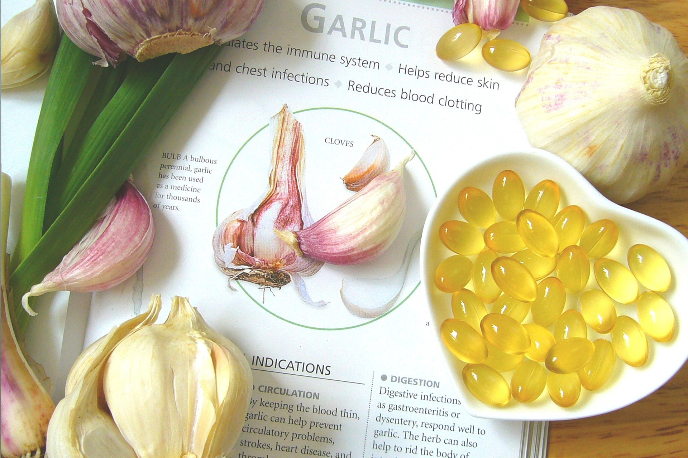

Therapies
I’ve worked with clients as a teacher and healer for over 20 years. I practice a number of therapies all of which work with the energy of the human body.
My ‘toolbox’ includes healing, meditation and visualisation, EFT, and natural nutrition. Each therapy I use is aimed at restoring harmony and balance to body, mind, and spirit.

Natural Nutrition
details...
Emotional Freedom Technique
details...
Did you wake up this morning full of energy and enthusiasm for the day ahead? Do you have a clear direction in life, know where you are going and how you are going to get there?
No?... Maybe Springboard can help?